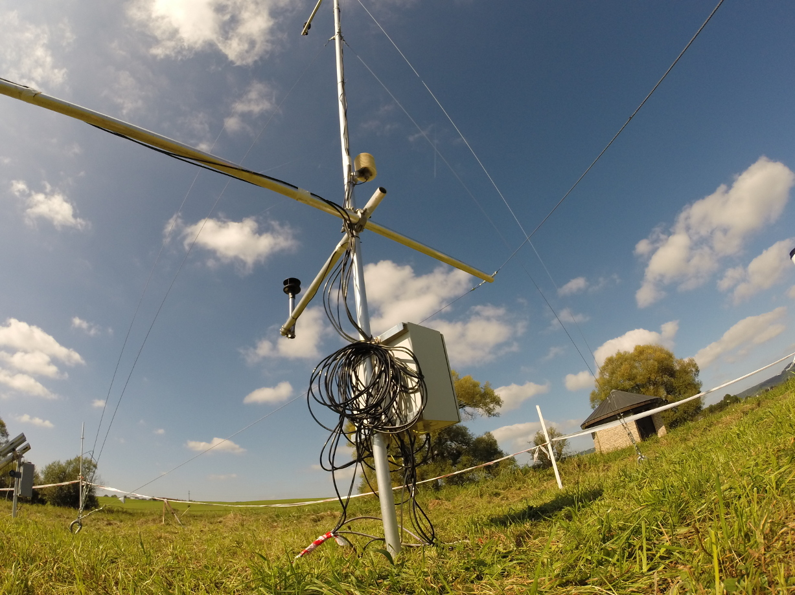

<div class="container">
    <!-- header -->
    <!-- the class container_fluid creates a grid -->
    <div class="container_fluid">
        <!-- grid row -->
        <div class="row">
        <!-- grid columns: the max cols number per row is 12 => col-3 means a col that is 1/4th of 12.
xs stands for extra small screen, so it keeps the row allingment even though the browser is reduced (instead of sm, md, lg)-->
            <div class="col-xs-3">
                

            </div>
            <div class="col-xs-7">
                <div class="text-center">
                    <h2><strong>The Ammertal Network</strong></h2>
                </div>
            </div>
            <div class="col-xs-2">
                <div class="pull-right">
                    <a href="http://www.wess.info/typo3/index.php?id=5"></a>
                    <!--<a href="http://www.geo.uni-tuebingen.de/arbeitsgruppen/angewandte-geowissenschaften/forschungsbereich/umweltphysik/arbeitsgruppe.html"></a>
                    <a href="http://www.uni-tuebingen.de/"></a>-->
                </div>
            </div>
        </div>
    </div>

    
	<!-- navigation bar-->
	<div class="navbar-wrapper" ng-controller="NavbarCtrl">
		<ul class="nav nav-pills mainMenu-nav-pills">
			<li ng-repeat="item in menu" ng-class="{active: isActive(item.link)}">
				<a ng-href="{{item.link}}">{{item.title}}</a>
			</li>
		</ul>
	</div>
</div>

